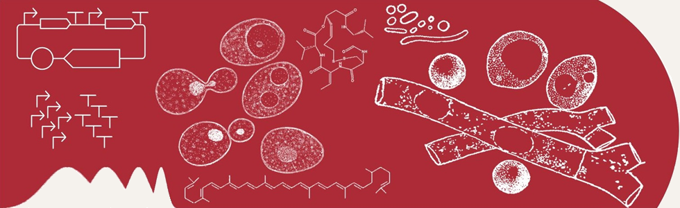

Puts the affiliation on every page (today the WPI logo is only in the footer). Same height as now. On phones the block hides and the header is unchanged.
One row instead of two: the header loses about 50px, which matters most while it is sticky. The empty space becomes the navigation. On phones the tabs drop below the band, as now.
The links people hunt for, on every page. The Join pill duplicates the Join tab, so it could go. The links would come from people.yml so they stay in one place.
The compact one-row header from B, with the affiliation set small above the tabs. The most useful use of the space, at the cost of a busier right edge.